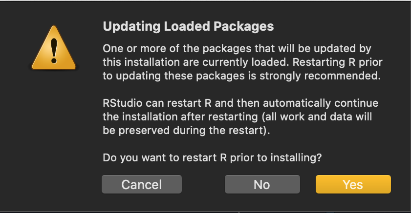

Course preparation - troubleshooting
December 12 2022
install_troubleshooting.RmdIf a package installation didn’t work or a library(xxx)
call didn’t work, then you have probably got an installation issue. The
installation details should be printed in your RStudio Console and can
help you troubleshoot the error. We’ll use the example here of errors
while calling install_github("SBOHVM/RPiR"), but it could
equally apply to installing another package, such as
install.packages("vegan").
Restarting R
Quite often restarting R (Session >
Restart R) can solve your problem. Just remember that once you’ve
restarted R, you’ll need to call library(devtools) again to
load it back into RStudio.
Also, if you find you’re stuck in a loop (perhaps after installing
fansi), and R is asking if you’d like to restart over and
over again (because the package is already loaded):

then just say no to restarting it the second time.
Non-zero exit status
Warning in install.packages :
installation of package ‘rlang’ had non-zero exit statusTry restarting R (Session > Restart
R) and reinstalling whatever package had non-zero exit status
(zero is success, so non-zero is a failed install), in this case
rlang:
install.packages("rlang")Assuming this worked, restart R again(!), and re-run
install_github("SBOHVM/RPiR").
Rtools is required to build R packages but is not currently installed…
WARNING: Rtools is required to build R packages but is not currently installed. Please download and install the appropriate version of Rtools before proceeding:Go here to download and install Rtools.
This might also be associated with a package install error, such as:
namespace ‘rlang’ 0.4.0 is already loaded, but >= 0.4.1 is requiredIn which case you should reinstall whatever package had the problem,
in this case the rlang package:
install.packages("rlang")Assuming this worked, restart R again(!), and re-run
install_github("SBOHVM/RPiR").
Cannot remove prior installation…
"Error in install.packages : cannot remove prior installation of package ‘rlang’ "For any cannot remove prior installation error, try
restarting R (Session > Restart
R) and reinstalling whatever package Windows couldn’t remove, in
this case rlang:
install.packages("rlang")Assuming this worked, restart R again(!), and re-run
install_github("SBOHVM/RPiR").
Try removing ‘C:.../00LOCK’
package ‘rlang’ successfully unpacked and MD5 sums checked
Error in install.packages : ERROR: failed to lock directory ‘C:\Users\User\Documents\R\win-library\3.6’ for modifying
Try removing ‘C:\Users\User\Documents\R\win-library\3.6/00LOCK’For this one, you need to find the 00LOCK file and delete it. Then try
installing whatever package was being unpacked, in this case
rlang:
install.packages("rlang")Assuming this worked, restart R again(!), and re-run
install_github("SBOHVM/RPiR").
If that doesn’t work after a couple of attempts, then you can try installing the package while ignoring the lock files:
install.packages("Rcpp", dependencies = TRUE, INSTALL_opts = '--no-lock')Fortran on Mac
If you have trouble getting a package (e.g. vegan) to
install with inscrutable errors that mention fortran, then this is
normal! If you’re on a Mac, then you should go to this site and download the correct version of
gfortran depending on your computer and install it. Then
restart R and try again!
If you’re on Windows or some other platform and find this error, ask for help!
libgit2 on Mac / Linux
If you are on a Mac, it’s very likely you got an error because you
need to have libgit2 installed. If so, then you probably
also need to install Homebrew - follow the instructions on https://brew.sh to do this. Once
Homebrew is installed, you can install libgit2 using
Homebrew by opening the Terminal app and then typing:
brew install libgit2The same may happen on Linux, and you will need to use the
distribution’s package manager to install either
libgit2-dev or libgit2-devel, depending on
whether you are on Debian/Ubuntu or Fedora/CentOS/RHEL,
respectively.